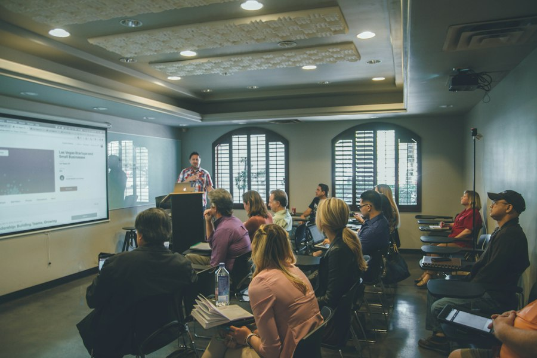
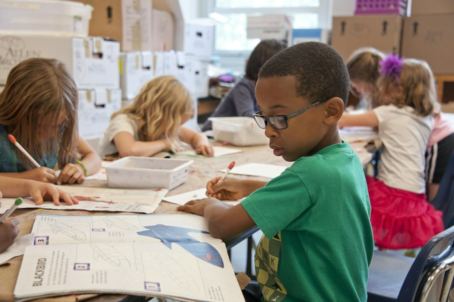

Pentadbiran & Pengurusan Sekolah
Menerajui tadbir urus berintegriti, telus dan berfokuskan pembangunan menyeluruh anak-anak watan SK Sungai Mas (JHEOA).
Visi Sekolah
"Pendidikan Berkualiti Insan Terdidik Negara Sejahtera — Memperkasa komuniti Orang Asli ke tahap pencapaian bertaraf global."
Misi Sekolah
"Melestarikan sistem pendidikan yang berkualiti untuk membangunkan potensi individu bagi memenuhi aspirasi negara melalui bimbingan bersepadu."
Piagam Pelanggan
Komited memberi layanan mesra, memastikan murid menerima pengajaran terbaik, serta menyalurkan bantuan kebajikan dan bantuan buku teks dengan adil dan tepat pada masa.
Carta Organisasi Pengurusan Sekolah
Barisan pentadbir berwawasan yang memacu pentadbiran SK Sungai Mas.
Pengurusan & Kepimpinan Sekolah

Pengurusan Kurikulum, Peperiksaan & Jadual Waktu

Disiplin, Bantuan Kebajikan Murid, SSDM & 3K
Pengakap, Kelab STEM, Warisan Budaya & Sukan
Direktori Guru & Kakitangan
Senarai lengkap guru pendidik dan staf sokongan SK Sungai Mas (JHEOA).